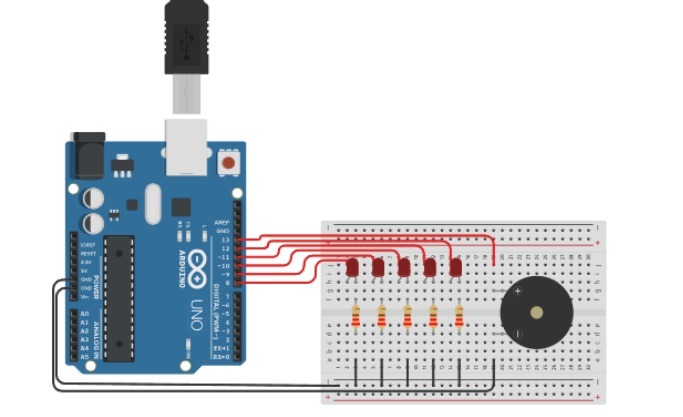

Los buzzers o zumbadores (activos o pasivos) se conectan al Arduino para emitir sonidos, alarmas o melodías. Los activos suenan al recibir 5V, mientras que los pasivos requieren una frecuencia (PWM) para variar el tono. Se conectan comúnmente con el pin positivo a una salida digital (ej. pin 11 o 5) y el negativo a GND.
Abrir simulación